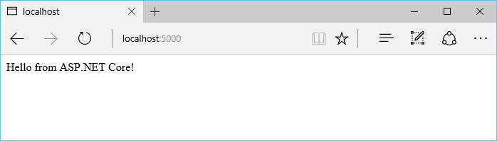

Getting Started¶
- Install .NET Core
- Create a new .NET Core project:
mkdir aspnetcoreapp cd aspnetcoreapp dotnet new
- Update the project.json file to add the Kestrel HTTP server package as a dependency:
{ "version": "1.0.0-*", "buildOptions": { "emitEntryPoint": true }, "dependencies": { "Microsoft.NETCore.App": { "type": "platform", "version": "1.0.0-rc2-3002702" }, "Microsoft.AspNetCore.Server.Kestrel": "1.0.0-rc2-final" }, "frameworks": { "netcoreapp1.0": { "imports": "dnxcore50" } } }
- Restore the packages:
dotnet restore
- Add a Startup.cs file that defines the request handling logic:
using System; using Microsoft.AspNetCore.Builder; using Microsoft.AspNetCore.Hosting; using Microsoft.AspNetCore.Http; namespace aspnetcoreapp { public class Startup { public void Configure(IApplicationBuilder app) { app.Run(context => { return context.Response.WriteAsync("Hello from ASP.NET Core!"); }); } } }
- Update the code in Program.cs to setup and start the Web host:
using System; using Microsoft.AspNetCore.Hosting; namespace aspnetcoreapp { public class Program { public static void Main(string[] args) { var host = new WebHostBuilder() .UseKestrel() .UseStartup<Startup>() .Build(); host.Run(); } } }
- Run the app (the
dotnet runcommand will build the app when it’s out of date):
dotnet run
- Browse to http://localhost:5000:
